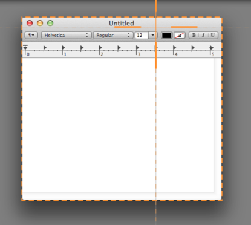
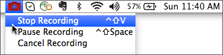

- Open or set up what you want to capture on the screen.
- Move the cursor over the Capture window. The Capture window expands.

- Click the Capture button or press the global capture hotkey Control-Shift-C.

- The orange crosshairs appear. Complete one of the following to select the area to capture:
- Fullscreen
Click the Fullscreen button to capture the entire screen.
- Window
Move the cursor over the window. When an orange dashed border appears around the window, click to select the highlighted area.

- Region
Click and drag to select the desired area on the screen.
- To select a standard video dimension, see Video Selection Guides.
- The video recording area is highlighted on the screen and the current dimensions display in the center of the recording toolbar.
- To resize the video recording area, drag the handles in or out.
- To enter specific dimensions, double-click the current dimensions and type a width and height in pixels.
- To move the video recording area, click within the selected area and drag it to a new location.
- Click the Capture Video button.
The video recording countdown begins. If you are recording a large area or the entire screen, the recording toolbar minimizes to the menu bar.

Continue with Record audio or Start and stop a video capture.